Free Phonics Worksheets You Can Print Today
Forty free printables from my phonics, reading, grammar, morphology, math and executive functioning packs, kindergarten through grade 6. Pick a subject to narrow the list.
The downloads are hosted on Teachers Pay Teachers. They are free; you only need a free TPT account to download.
Pick the One That Fits Your Reader
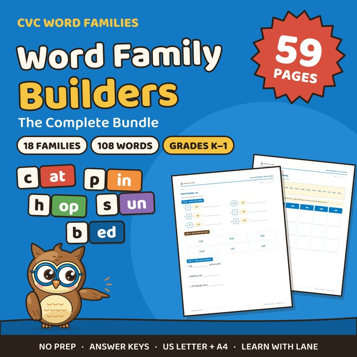
CVC Word Families: -at, -an, -ap
For a child who knows letter sounds and is starting to blend them into words.
What’s inside
- Build six words in each family
- Read them out loud
- Finish three sentences per page
- Answer key included
Full pack: 18 word families, 59 pages
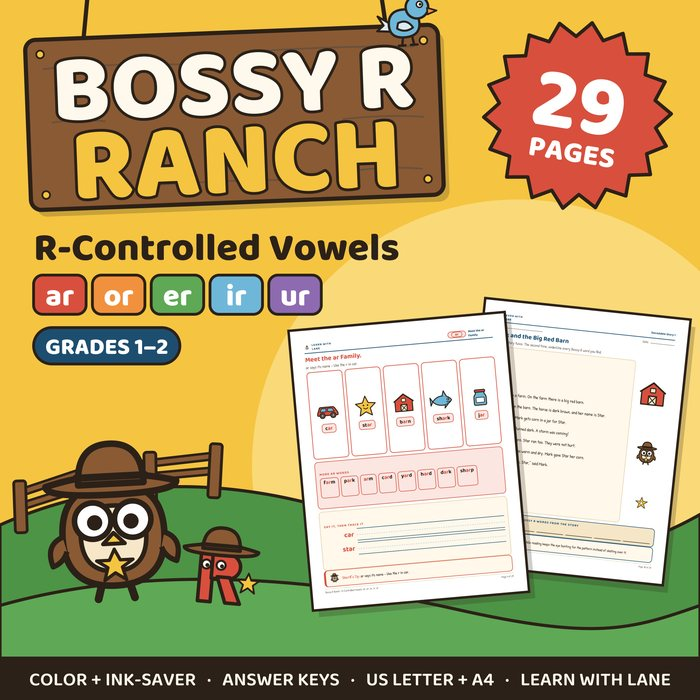
Bossy R: R-Controlled Vowels
For a child who reads short-vowel words and is ready for ar, or, er, ir and ur.
What’s inside
- The Bossy R rule page, to keep on the desk
- Meet the ar family: picture words to read and trace
- ar practice with sound boxes
- Answer key included
Full pack: all five patterns, 29 pages, two decodable stories
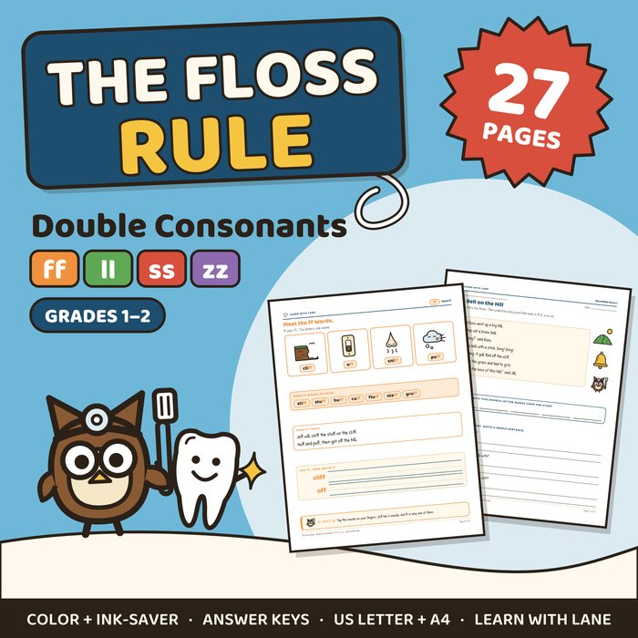
The Floss Rule: Double Consonants
For a child who spells hil and mes: the sounds are right, the double is missing.
What’s inside
- The Floss Rule page: three questions to ask
- Meet the ff words: picture words and sentences
- ff practice with sound boxes
- Answer key included
Full pack: ff, ll, ss and zz, 27 pages, two decodable stories
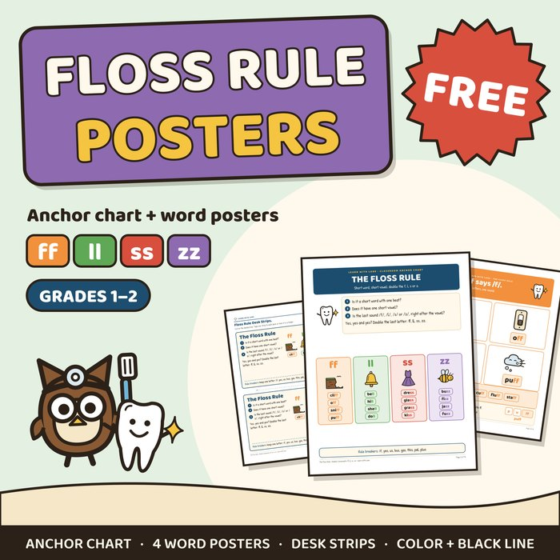
FLSZ Rule Posters: Floss Rule Anchor Chart and Word Posters
For the wall where students write. Three questions decide when the last letter doubles.
What’s inside
- The Floss Rule anchor chart, with a rule breakers box
- One word poster each for ff, ll, ss and zz
- Desk strips, two to a page
- Every page in color and in black line
Full pack: ff, ll, ss and zz, 27 pages, two decodable stories
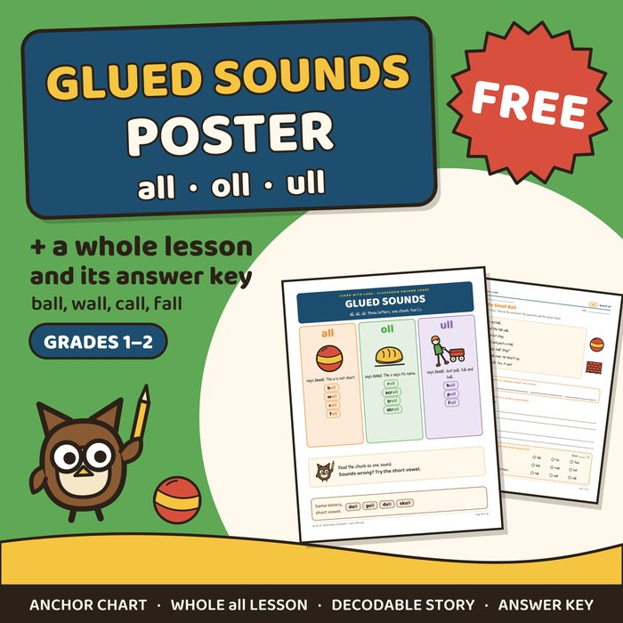
Glued Sounds Poster: all, oll, ull Anchor Chart and Lesson
For the reader who rhymes ball with pal. Three letters, one chunk, one sound box.
What’s inside
- Anchor chart: all, oll and ull, plus doll and gull
- The glued sounds desk page
- The whole all lesson and a decodable story
- Quick Check and answer key
Full pack: all oll ull worksheets, 36 pages, five decodable stories
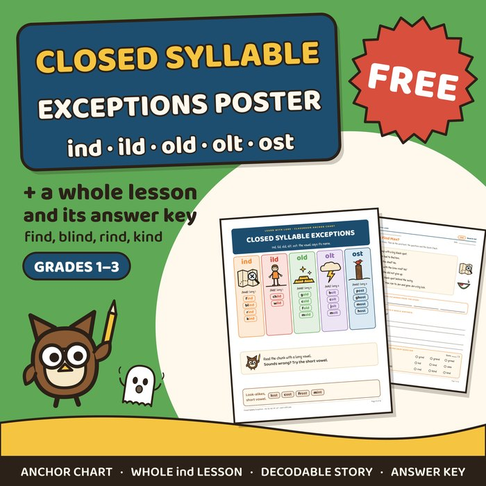
Closed Syllable Exceptions: ind, ild, old, olt, ost Anchor Chart and Lesson
For the reader who sounds out find with a short i. Five chunks where the vowel says its name.
What’s inside
- Anchor chart: ind, ild, old, olt and ost, plus the short look-alikes
- The five-chunk desk page
- The whole ind lesson and a decodable story
- Quick Check and answer key
Full pack: closed syllable exceptions worksheets, 42 pages, seven decodable stories
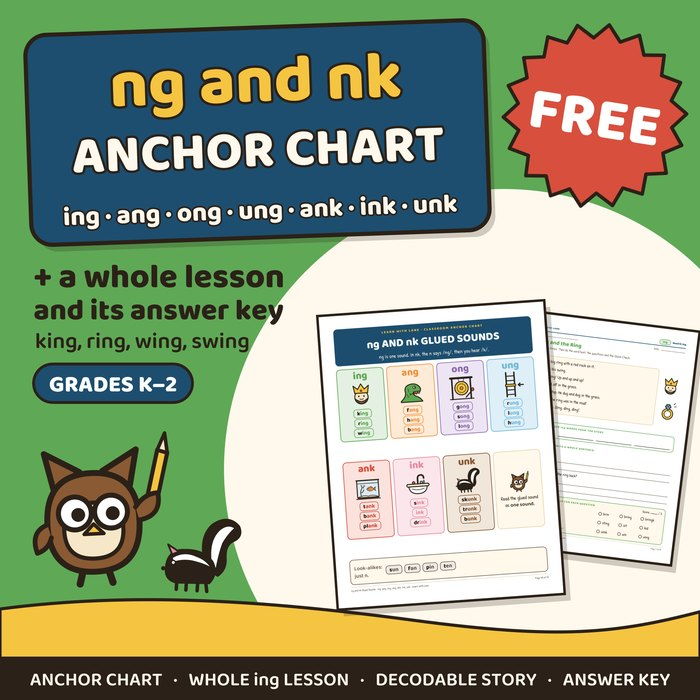
ng and nk Anchor Chart: ing, ang, ong, ung, ank, ink, unk and Lesson
For the reader who sounds out k-i-n-g letter by letter. Seven glued sounds, each read as one part.
What’s inside
- Anchor chart: the seven glued sounds, plus words that end in just n
- The seven-sound desk page: sing, sink or sin?
- The whole ing lesson and a decodable story
- Quick Check and answer key
Full pack: ng and nk worksheets, 49 pages, nine decodable stories
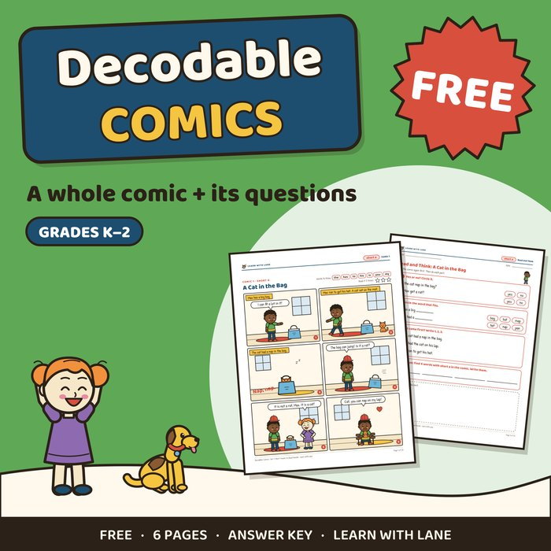
Decodable Comic: A Cat in the Bag, with Questions
A six-panel comic a beginning reader can sound out, with the heart words printed on top.
What’s inside
- Comic 1: a short a story with Max, Jen and Bud the dog
- Read and Think: yes or no, circle the word, put it in order
- The map of all 12 comics, short a to ng and nk
- Make Your Own Comic page and answer key

The ck Rule: ck or k?
For a child who spells bak and duk, or who writes ck everywhere once it is taught.
What’s inside
- The ck Rule page: three questions to ask
- Meet the ack words, then practice with sound boxes
- A short decodable story with a quick check
- Answer key included
Full pack: five ck word families and k alone, 43 pages, seven decodable stories
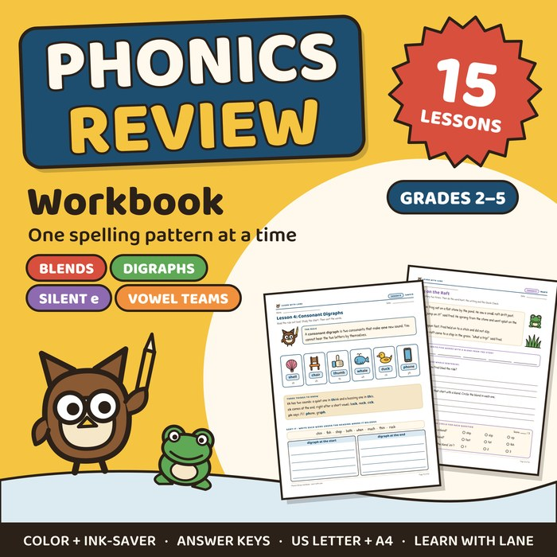
Compound Words: One Full Lesson
For a reader who stalls on long words: find the two small words inside.
What’s inside
- Rule chart with picture equations and a word sort
- Fill-in-the-blank and multiple-choice practice
- A short story with a word hunt and a Quick Check
- Answer key included
Full workbook: 15 phonics review lessons, 53 pages, color and ink-saver
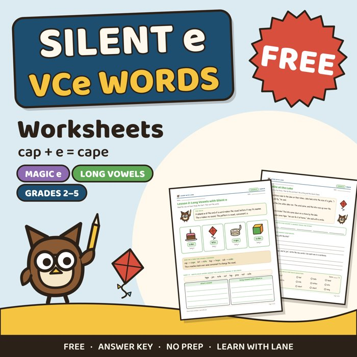
Silent e (VCe): One Full Lesson
For a reader who learned the magic e rule and now reads every word as long: tap or tape?
What’s inside
- Rule chart and a short-or-long word sort
- Fill-in-the-blank and multiple-choice practice
- A short story with a word hunt and a Quick Check
- Answer key included
Full workbook: 15 phonics review lessons, 53 pages, color and ink-saver

Reading Intervention: Syllable Types, Prefixes, Fluency
For an older student who can read, but slowly, and stalls on long words.
What’s inside
- The six syllable types, with a practice page
- Prefixes dis- and pre-
- A timed repeated-reading passage with a chart
- Summarizing with SWBST
Full workbook: The Reading Playbook, 100 pages
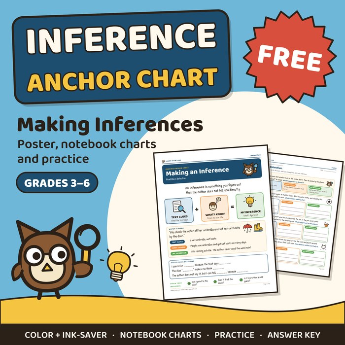
Making Inferences: Anchor Chart and Practice
For a reader who can retell a story but misses what the author leaves unsaid.
What’s inside
- Anchor chart in color and ink-saver: text clues + what I know = my inference
- Notebook charts with blanks, two to a page
- Three short practice texts and a short story with a Quick Check
- Teacher guide and answer key included
Full pack: Making Inferences in Short Stories, 12 stories, 42 pages
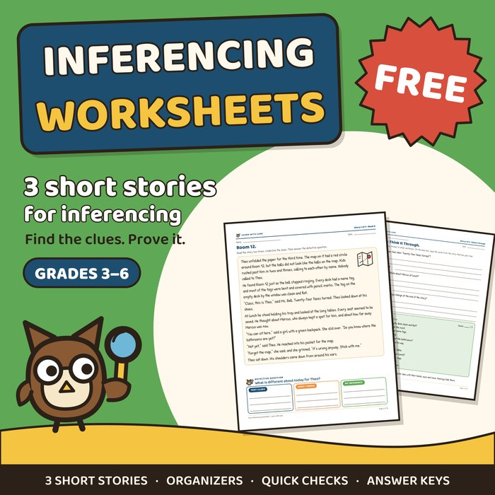
Inferencing Worksheets: 3 Short Stories
For a reader who guesses, or copies a sentence and calls it an inference.
What’s inside
- How to make an inference, with a worked example
- Six one-sentence warm-ups
- Three short stories, each with a clue organizer and a Quick Check
- Answer keys included
Full pack: Making Inferences in Short Stories, 12 stories, 42 pages
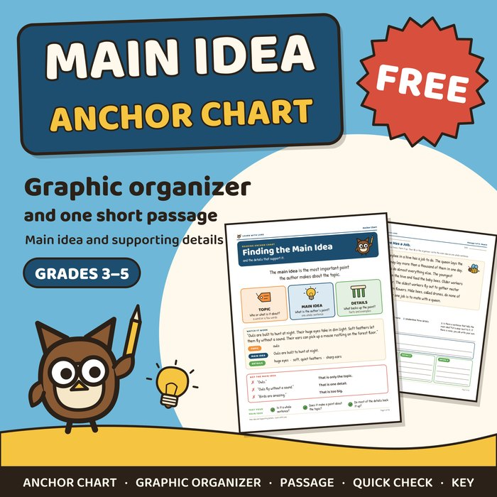
Main Idea: Anchor Chart, Organizer and Passage 1
For a reader who names the topic, or the most exciting fact, and calls it the main idea. (Some standards call it the central idea; it is the same skill.)
What’s inside
- Anchor chart: topic, main idea, details
- Every Bee Has a Job, a short passage with an organizer
- Three questions, a Quick Check, and an organizer for any text
- Answer key included
Full pack: Main Idea and Supporting Details, 12 passages, 42 pages
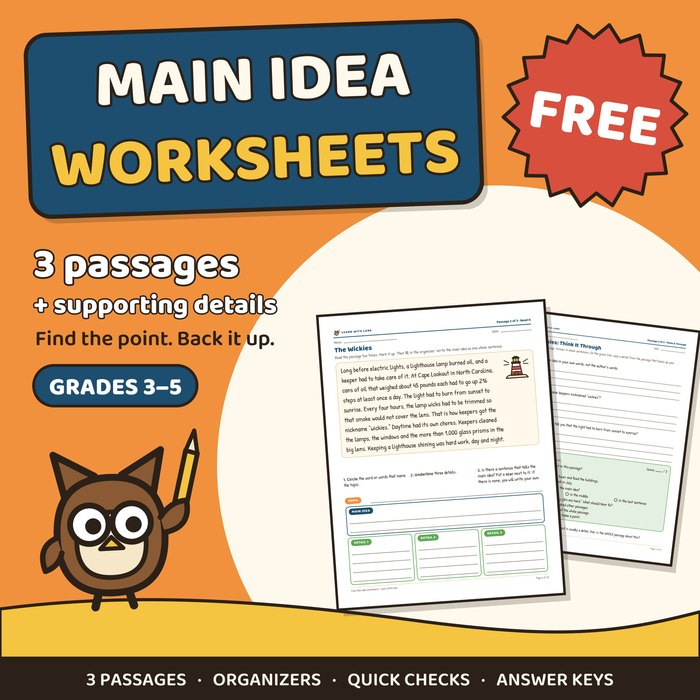
Main Idea Worksheets: 3 Passages
For a reader who copies the first sentence, or picks the most exciting fact.
What’s inside
- Anchor chart with a worked example
- Four short warm-up paragraphs
- Three passages (beavers, lighthouse keepers, footprints on the Moon), each with an organizer and a Quick Check
- Answer keys included
Full pack: Main Idea and Supporting Details, 12 passages, 42 pages
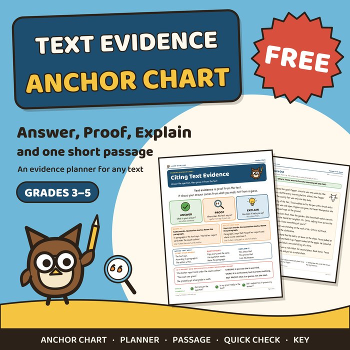
Text Evidence: Anchor Chart, Planner and Passage 1
For a reader who copies a line that proves nothing, or writes "because it said so."
What’s inside
- Anchor chart: Answer, Proof, Explain
- An Is It Proof? table with strong, weak and not proof
- One short passage with an evidence job and a Quick Check
- An evidence planner for any text, and the answer key
Full pack: Citing Text Evidence, 12 passages, 42 pages
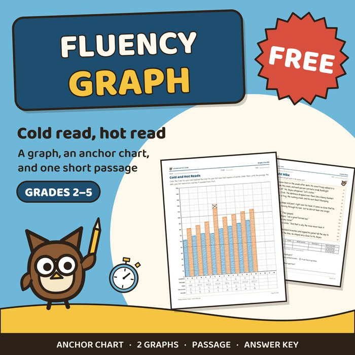
Fluency Graph: Cold Reads, Hot Reads and a Passage
For a reader who thinks fast means good. Graph the words correct, and keep an eye on how it sounds.
What’s inside
- Anchor chart: accuracy, pace and expression
- How to fill in the graph, with a worked example
- Cold and hot read graph, to 150 or with your own numbers
- One story with running word counts, and the answer key
Full pack: Reading Fluency Tracker, 26 graphs, 12 passages, 58 pages
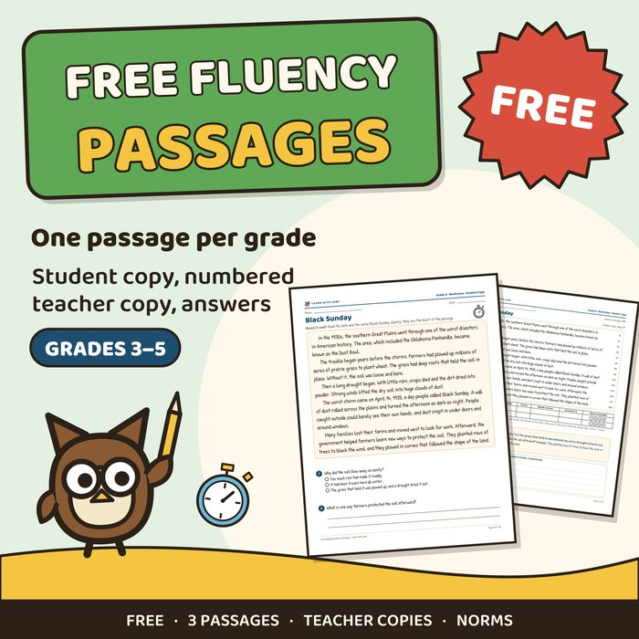
Fluency Passages: One per Grade
For a quick one-minute read where the counting is already done: the teacher copy numbers every line.
What’s inside
- A grade 3 story, a grade 4 nonfiction passage, a grade 5 story
- A clean student copy and a numbered teacher copy for each
- Two questions per read, with the answers
- The timing routine and the 2017 fluency norms
Full pack: Oral Reading Fluency Passages, 24 passages, 58 pages
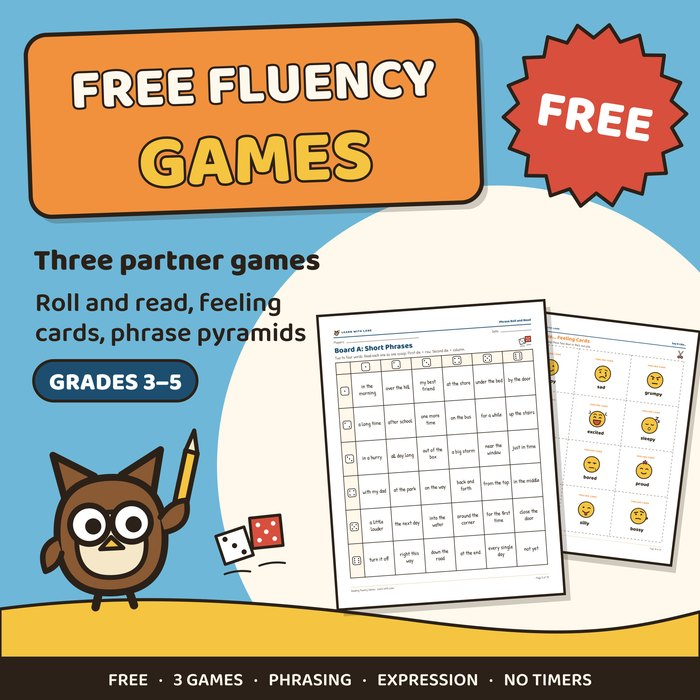
Reading Fluency Games: Three to Try
Partner games where smooth, expressive reading wins, not fast reading. No timers.
What’s inside
- Phrase Roll and Read: rules and a 36-phrase board
- Say It Like...: 12 feeling cards and 12 sentence cards
- Phrase Pyramids: two pyramids that grow a phrase per step
- Partner feedback cards
Full pack: Reading Fluency Games, 8 games, 39 pages
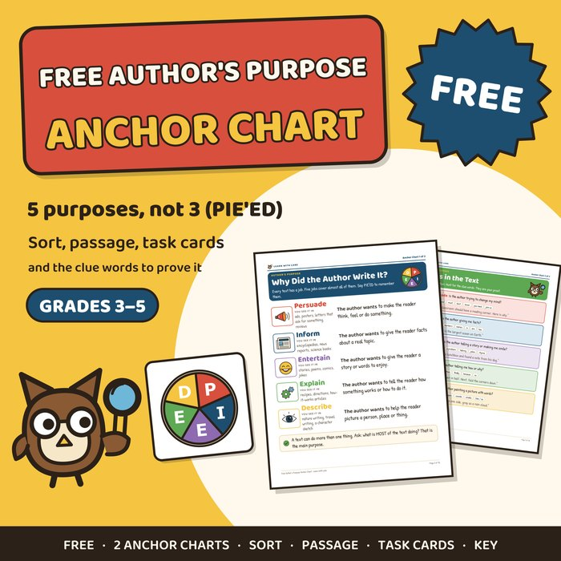
Author's Purpose Anchor Chart
Teach five purposes, not three (PIE'ED: persuade, inform, entertain, explain, describe), then prove each one with the text.
What’s inside
- Two anchor charts: what each author wants, and the clue words
- A 15-text sort
- A describe passage with 4 Prove It questions
- 8 task cards, a recording sheet and the key
Full pack: Author's Purpose Worksheets, 6 passages, 22 pages
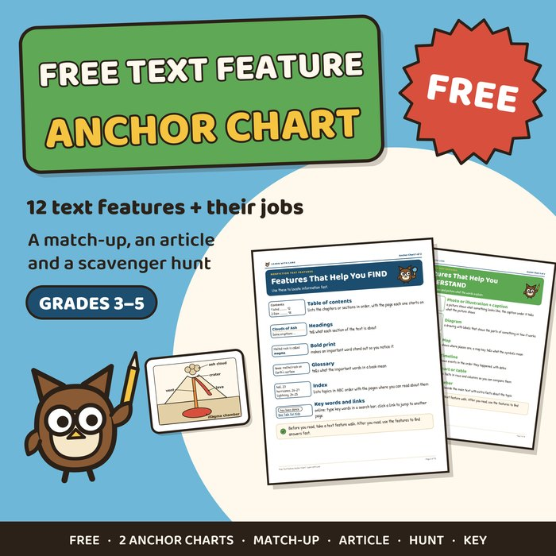
Text Feature Anchor Chart
Teach 12 nonfiction text features by their job, then use them on a real article.
What’s inside
- Two anchor charts: features that help you find and understand
- Text feature match-up
- A volcano article with a labeled diagram and 6 questions
- A scavenger hunt for any nonfiction book, with a key
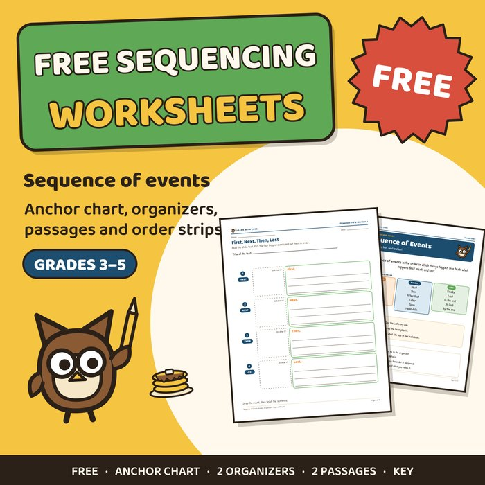
Sequencing Worksheets
Teach the order of events with a chart and a model, then practice on two short passages.
What’s inside
- Sequence of events anchor chart with time words
- Model lesson with a worked example
- First, Next, Then, Last and flow chart organizers
- A story and a how-to, with order strips and a key
Full pack: Sequence of Events Graphic Organizers, 8 organizers, 31 pages
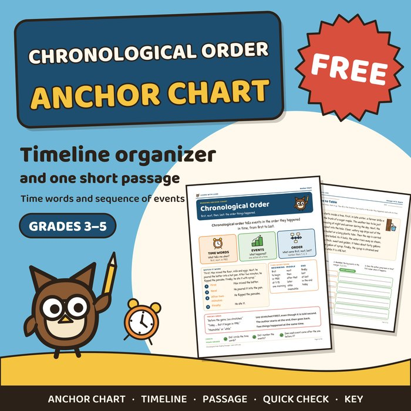
Chronological Order: Anchor Chart, Timeline and Passage 1
For a reader who lists events in the order they are written, not the order they happened.
What’s inside
- Anchor chart: time words, events, order, and the tricky ones
- From Tree to Table, a short passage on maple syrup with a timeline
- Three questions, a Quick Check, and a timeline for any text
- Answer key included
Full pack: Chronological Order Passages, 12 passages, 42 pages
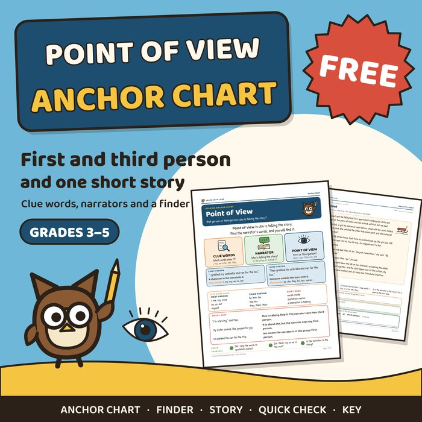
Point of View: Anchor Chart, Finder and Story 4
For a reader who sees “I” inside quotation marks and calls a story first person.
What’s inside
- Anchor chart: first and third person, clue words, and the tricky ones
- The Red Sled, a short third-person story with a point of view finder
- Three questions, a Quick Check, and a finder for any story
- Answer key included
Full pack: First and Third Person Point of View, 12 stories, 42 pages
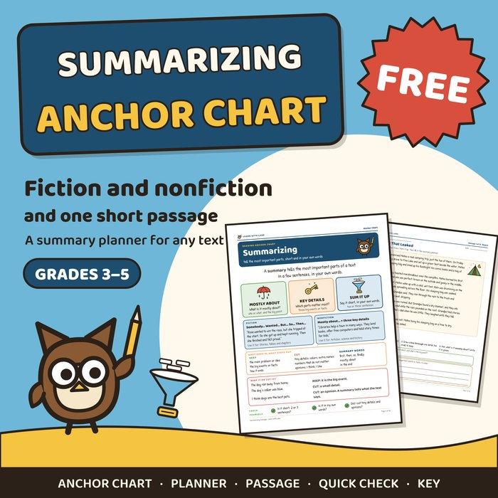
Summarizing: Anchor Chart, Planner and Passage 1
For a reader who retells the whole story when you ask for a summary.
What’s inside
- Anchor chart: fiction and nonfiction frames, keep it or cut it, and the tricky ones
- The Tent That Leaked, a short story with a summary planner
- The summary, two questions, a Quick Check, and a planner for any text
- Answer key included
Full pack: Summarizing Passages, 12 passages, 42 pages
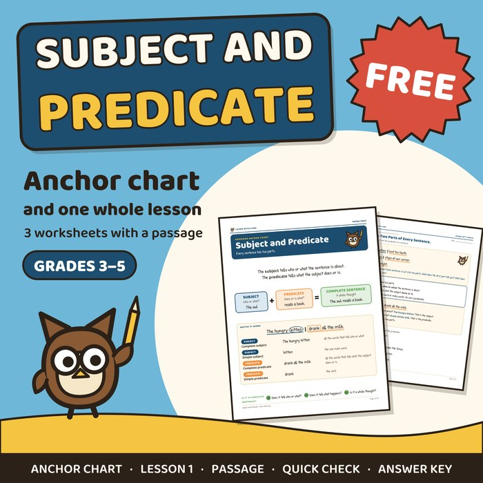
Subject and Predicate: Anchor Chart and Lesson 1
For a writer who cannot yet say where the subject of a sentence ends.
What’s inside
- Anchor chart: subject + predicate = complete sentence
- Learn It and Practice It: mark, match, then write
- Kite Day, a short passage with a Quick Check
- Answer key included
Full pack: Subject and Predicate, 7 lessons, task cards and a quiz, 41 pages
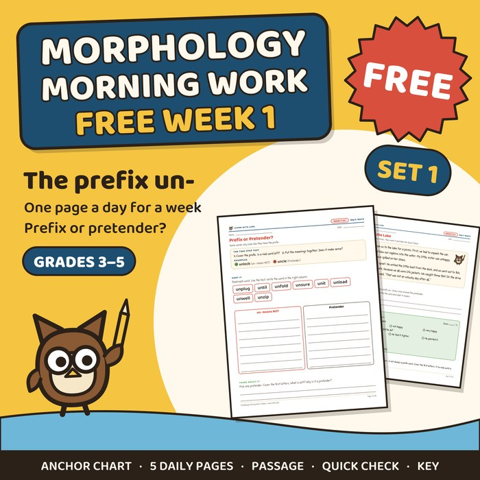
Morphology Morning Work: Week 1, the Prefix un-
For a reader who meets unkind, unfair and unsafe and reads each one as a brand-new word.
What’s inside
- One page a day for a week, about 10 minutes
- Prefix or pretender: uncle starts with un but has no prefix
- A short story with a 3-question Quick Check
- Anchor chart and answer key included
Full pack: Morphology Morning Work: Prefixes, 8 weeks, 55 pages
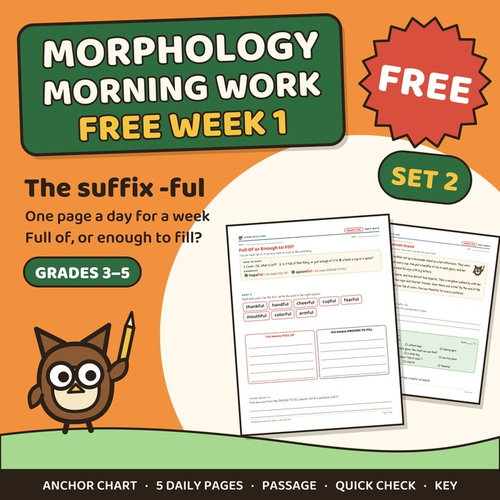
Morphology Morning Work: Week 1, the Suffix -ful
For a reader who knows the word full and writes helpfull, or reads handful as full of hands.
What’s inside
- One page a day for a week, about 10 minutes
- Full of, or enough to fill? A sort for the two meanings of -ful
- A short story with a 3-question Quick Check
- Anchor chart and answer key included
Full pack: Morphology Morning Work: Suffixes, 8 weeks, 55 pages
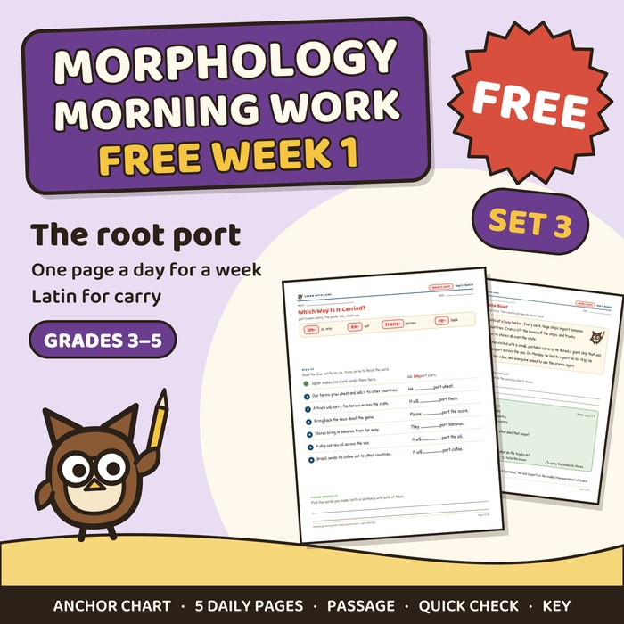
Greek and Latin Roots: Week 1, the Root port
For a reader who meets transportation and stops, because the root is hiding in the middle of a long word.
What’s inside
- One page a day for a week, about 10 minutes
- Import, export, transport, report: the prefix tells which way it is carried
- A short story with a 3-question Quick Check
- Anchor chart and answer key included
Full pack: Morphology Morning Work: Greek and Latin Roots, 8 weeks, 55 pages
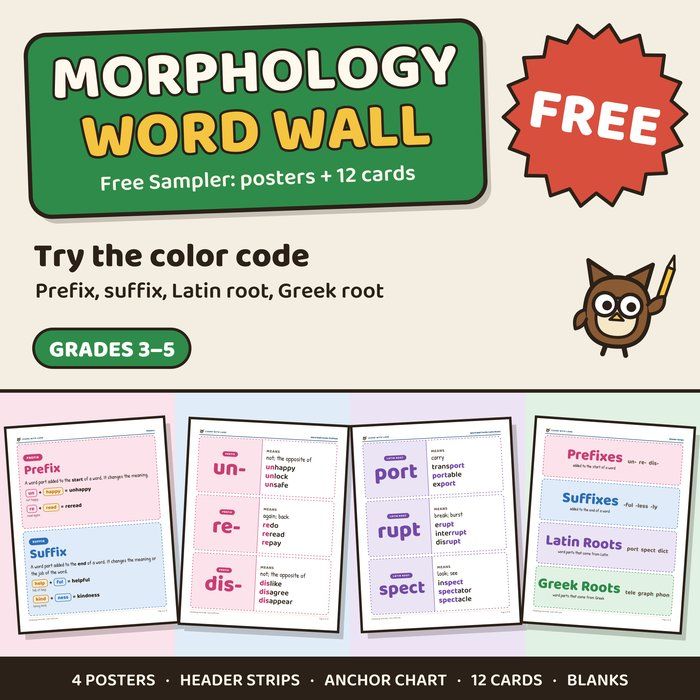
Morphology Word Wall Starter
For a class that is learning prefixes, suffixes and roots and needs somewhere to look when a long word gets in the way.
What’s inside
- Prefix, Suffix, Base Word and Root posters
- 4 header strips and a Read a Long Word anchor chart
- 12 color-coded cards: pink prefixes, blue suffixes, purple Latin roots, green Greek roots
- Blank cards to write your own
Full set: Morphology Word Wall, 96 cards, 47 pages
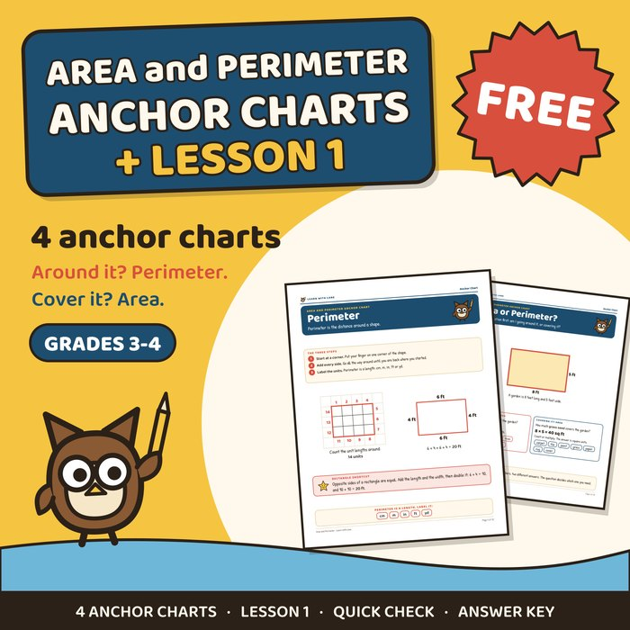
Area and Perimeter Anchor Charts
For a child who counts the squares along the edge and calls it the perimeter, or mixes up the two answers.
What’s inside
- Four anchor charts: Perimeter, Area, Area or Perimeter?, Shapes Made of Rectangles
- A full first lesson: find the perimeter by adding the sides
- Six practice shapes and a 3-question Quick Check
- Answer key included
Full pack: Area and Perimeter, 8 lessons, 33 pages
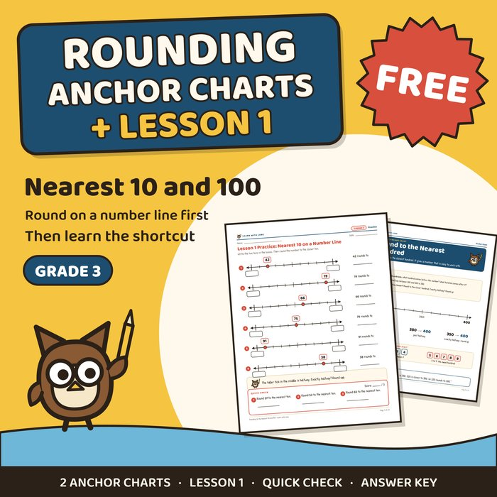
Rounding Anchor Charts and a Number Line Lesson
For a child who says 349 rounds to 400, or knows “5 or more” but not why.
What’s inside
- Two anchor charts: the nearest ten and the nearest hundred
- A full first lesson: find the two tens, find halfway, round
- Six number lines and a 3-question Quick Check
- Answer key included
Full pack: Rounding to the Nearest 10 and 100, 7 lessons, 27 pages
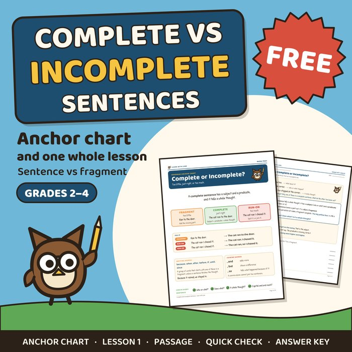
Complete vs Incomplete Sentences: Anchor Chart and Lesson
For a child who calls every long sentence a run-on and every short one a fragment. “Snow fell.” is complete.
What’s inside
- Anchor chart: fragment, complete sentence and run-on side by side
- A full first lesson: Who or what? Does what? A whole thought?
- A short piece of student writing with five fragments to find
- Answer key included
Full pack: Complete and Incomplete Sentences, 7 lessons, 41 pages
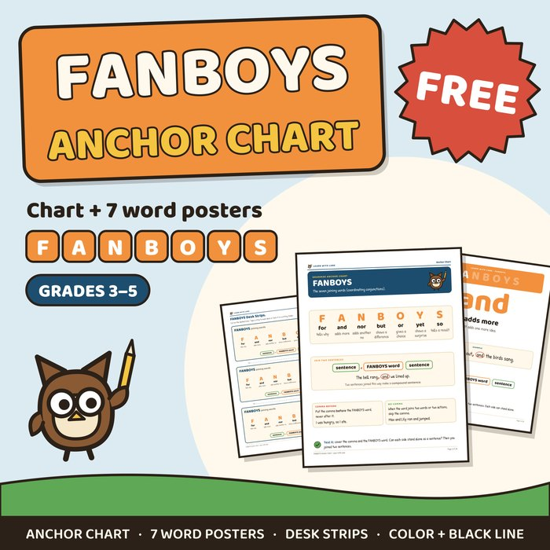
FANBOYS Anchor Chart and Word Posters
For the writer who knows the seven words by heart and still leaves out the comma. Each word gets its job: and adds, but shows a difference, so tells a result.
What’s inside
- FANBOYS anchor chart with the comma rule
- One poster each for for, and, nor, but, or, yet and so
- Desk strips, three to a page
- Every page in color and in black line
Full pack: Simple, Compound and Complex Sentences, 7 lessons, 41 pages
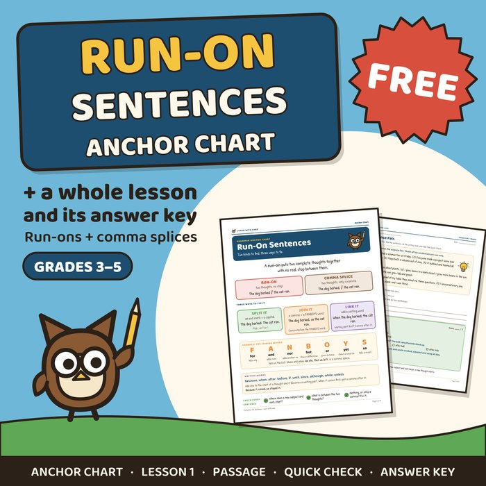
Run-On Sentences Anchor Chart and Lesson
For the writer who runs two thoughts together and cannot hear where it breaks. Find where the first thought ends.
What’s inside
- Anchor chart: run-on, comma splice and three ways to fix them
- A full first lesson with six sentences to try
- A short piece of student writing with three run-ons to find
- Answer key included
Full pack: Fixing Run-On Sentences, 7 lessons, 41 pages
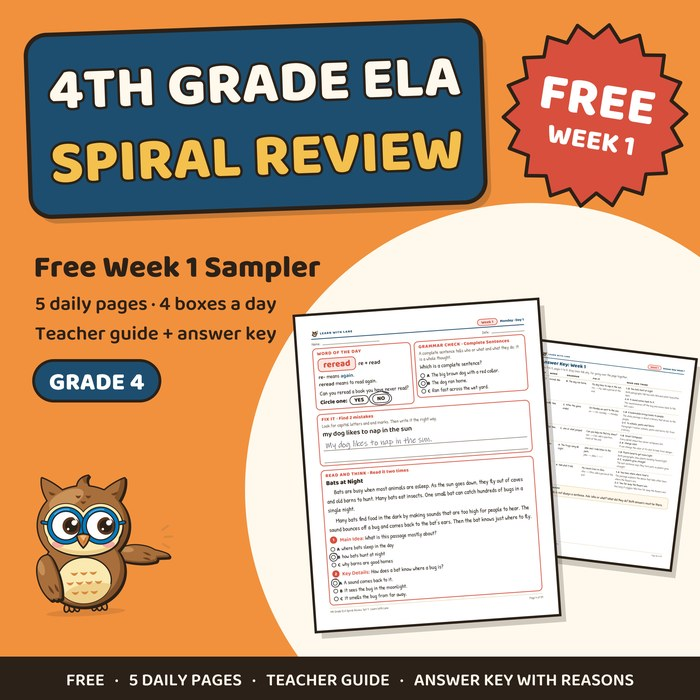
4th Grade ELA Spiral Review: Week 1
Ten minutes every morning, the same four boxes every day. Try the whole first week before you buy.
What’s inside
- Five daily pages: Word of the Day, Grammar Check, Fix It, Read and Think
- The teacher guide and the nine weeks at a glance
- The Week 1 answer key, with reasons
Full set: 4th Grade ELA Spiral Review, Set 1, 45 days, 59 pages
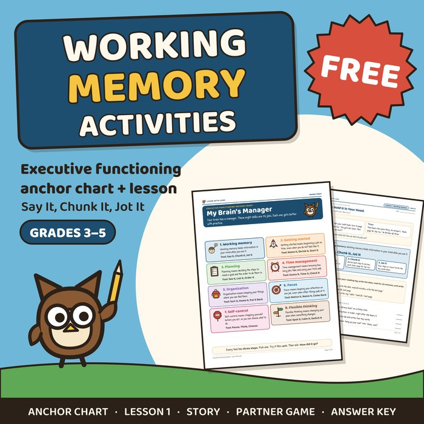
Working Memory Activities: Anchor Chart and Lesson
For the student who hears three directions and does one. A tool a child can say out loud: Say It, Chunk It, Jot It.
What’s inside
- Anchor chart: all eight executive functioning skills, with a tool for each
- A full first lesson on working memory, with a short story and Quick Check
- A Say It Back partner game, from two steps to four
- Answer key included
Full pack: Executive Functioning Curriculum, 8 lessons, 51 pages
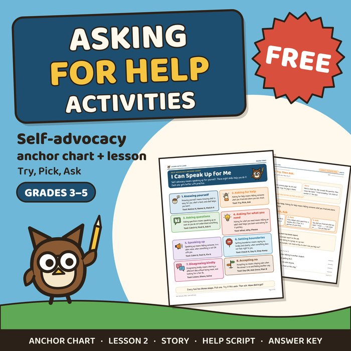
Asking for Help Activities: Anchor Chart and Lesson
For the student who sits stuck and silent until the bell. A tool a child can say out loud: Try, Pick, Ask.
What’s inside
- Anchor chart: all eight self-advocacy skills, with a tool for each
- A full lesson on asking for help, with a short story and Quick Check
- A help plan and a help script to practice out loud
- Answer key included
Full pack: Self Advocacy Lessons and Activities, 8 lessons, 51 pages
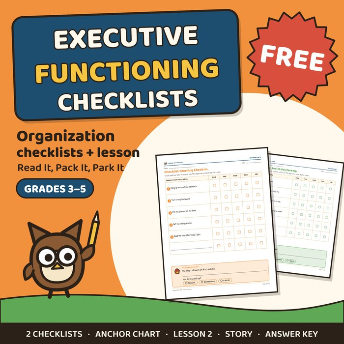
Executive Functioning Checklists and Lesson
For the student whose homework is done and still on the kitchen table. Same spots, every night: Read It, Pack It, Park It.
What’s inside
- Two checklists: Morning Check-In and End-of-Day Pack-Up
- Anchor chart: all eight organization skills, with a tool for each
- A full lesson on packing a backpack, with a short story and Quick Check
- Answer key included
Full pack: Organization Skills Activities, 8 lessons, 4 checklists, 55 pages
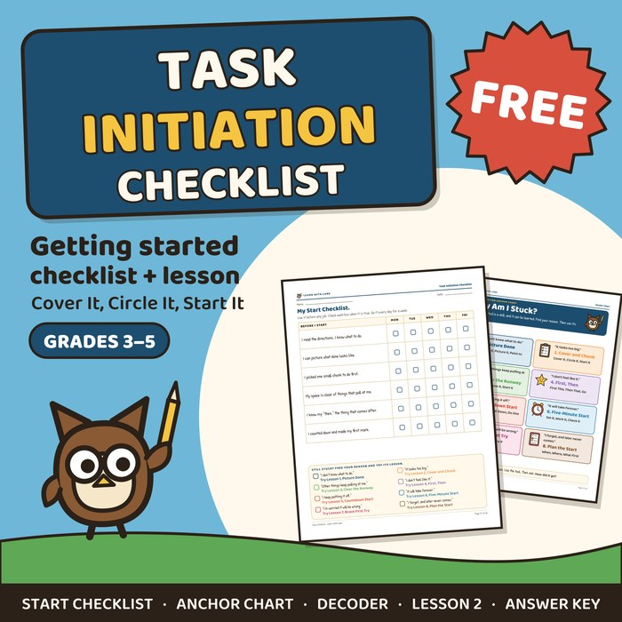
Task Initiation Checklist and Lesson
For the student who sits with a full page and an empty pencil. When a job looks too big: Cover It, Circle It, Start It.
What’s inside
- A daily start checklist, six steps with a box for each school day
- Anchor chart: eight reasons kids get stuck, with a strategy for each
- A full Cover and Chunk lesson with a teacher page, a short story and Quick Check
- Answer key included
Full pack: Task Initiation Activities and Strategies, 8 lessons, 62 pages
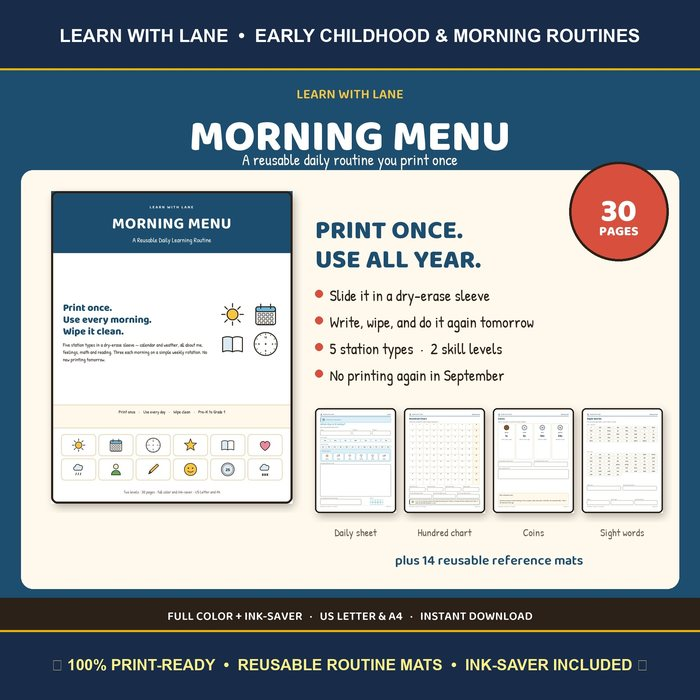
Morning Menu: Calendar and 100 Chart
For a short daily routine a young child can do with a dry-erase marker.
What’s inside
- Print once and slide into a dry-erase pocket
- Calendar page
- 100 chart page
Full binder: 30 pages in color and ink-saver
How These Worksheets Teach
One pattern at a time
Each page practices a single spelling pattern. Patterns are mixed only after each one has been taught on its own, so a child is never guessing between things nobody has shown them yet.
Sounds first, then spelling
Sound boxes ask the child to write one sound in each box. Two letters that make one sound, like the ff in cliff, share a box.
Built for a parent, a tutor, or a teacher
Every pack has an answer key and a short guide. You do not need training in a reading program to use them.
What order should I use them in?
CVC word families come first, then the floss rule (ff, ll, ss, zz), then ck or k, then r-controlled vowels. Syllable types and prefixes are for students who already read one-syllable words well.
Want the Whole Pack?
Every free sampler above links to its full pack. All 41 paid packs and bundles are on one page.
Want help using them?
I'm David Lane, a certified teacher with 20+ years in the classroom. I teach live online English classes for homeschool kids in grades 4–8.